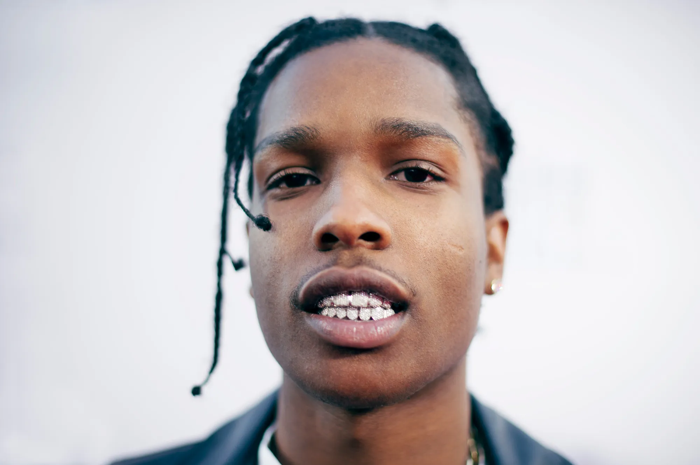

A$AP Rocky
Born: 03 October 1988
Age:
Years Active: 2007-present
Genre/s: East Coast hip-hop, psychedelic rap, experimental hip hop, alternative hip hop, cloud rap
Label/s: ASAP Worldwide, AWGE, Polo Grounds, RCA
Member of: ASAP Mob
Rakim Athelston Mayers (born October 3, 1988), known professionally as ASAP Rocky (/ˈeɪsæp/ AY-sap; stylized as A$AP Rocky), is an American rapper, record producer, actor, fashion designer and model. Born and raised in Harlem, he embarked on his musical career as a member of the hip hop collective ASAP Mob, from which he adopted his stage name. In August 2011, Mayers' single "Peso" was leaked online and began receiving radio airplay within weeks, propelling cloud rap into mainstream attention. He signed with Polo Grounds Music, an imprint of RCA Records, that October and released his debut mixtape, Live. Love. A$AP to widespread critical acclaim.
Mayers' 2012 single, "Fuckin' Problems" (featuring Drake, 2 Chainz and Kendrick Lamar), marked his first entry—at number eight—on the Billboard Hot 100, was nominated for Best Rap Song at the 56th Annual Grammy Awards, and preceded his debut studio album, Long. Live. A$AP (2013). A critical and commercial success, it debuted atop the Billboard 200 and received double platinum certification by the Recording Industry Association of America (RIAA). His second album, At. Long. Last. A$AP (2015), also debuted atop the chart and saw continued critical praise; its two lead singles, "Lord Pretty Flacko Jodye 2 (LPFJ2)" and "Everyday" (featuring Rod Stewart, Miguel and Mark Ronson), both received double platinum certifications by the RIAA, while its third, "L$D", was nominated for Best Music Video at the 58th Annual Grammy Awards. His third album, Testing (2018), debuted within the Billboard 200's top five, while his fourth album, Don't Be Dumb (2026), debuted atop the chart.
Aside from his musical career, Mayers founded the creative agency and record label AWGE in 2014. AWGE launched partnerships with Marine Serre, Amina Muaddi, Moncler, JW Anderson, Under Armour, PacSun, Vans, Mercedes-Benz, Selfridges, as well as conceptual collaborations with MTV and Needles. Mayers co-launched cult fashion label VLONE, co-chaired the Met Gala in 2025 and spearheaded campaigns for DKNY, Calvin Klein, Gucci, Bottega Veneta, Ferragamo, Beats by Dre, Dior Homme and more. As of 2025, he serves as the creative director for Puma F1 and Ray-Ban. As an actor, Mayers has had supporting roles in Dope (2015), Monster (2018), Spike Lee's Highest 2 Lowest (2025) alongside Denzel Washington, and If I Had Legs I'd Kick You (2025).
Mayers has received accolades such as a BET Award, two BET Hip Hop Awards, an MTV Video Music Award Japan and an MTVU Woodie Award. His creative entrepreneurship has been rewarded with the Global Style Icon Award, the Virgil Abloh award, the Cultural Innovator Award, the Collaboration Of The Year Award, and the Fashion Icon Award. He has been nominated for two Grammy Awards, six World Music Awards, three MTV Video Music Awards and two MTV Europe Music Awards. Furthermore, Mayers has co-directed most of his own music videos, as well as worked in production or co-writing for other artists, often under the pseudonym Lord Flacko.